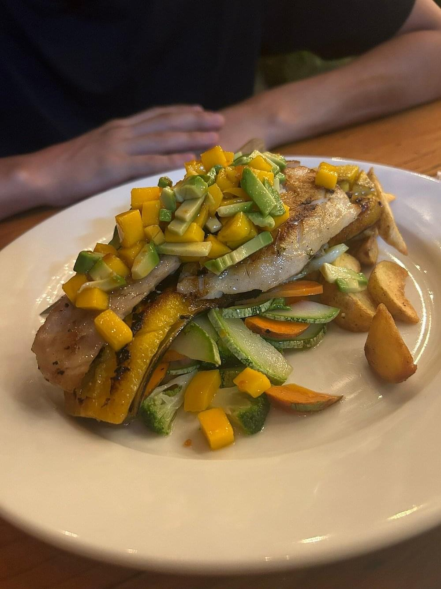

Conoce más sobre nosotros
En De La Finca, nos enorgullecemos de ofrecer una experiencia culinaria única en Quepos, Costa Rica. Nuestra pasión es combinar ingredientes frescos y locales con técnicas modernas, creando platos que sorprenden el paladar. Desde deliciosas hamburguesas de atún hasta tartar de atún y lomito con gorgonzola, cada plato está preparado con dedicación. Nuestro ambiente acogedor y la atención personalizada hacen que cada visita sea especial. Ven y disfruta de sabores inolvidables, guiados por la pasión de servir lo mejor.
Descubre una experiencia culinaria inolvidable, donde la pasión por los ingredientes frescos y el ambiente acogedor se unen para crear platos únicos en Quepos.
Vive la experiencia
